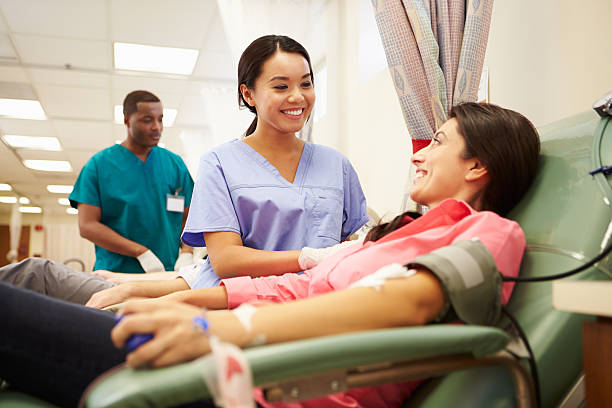

Donation Info
Donating blood is a powerful way to give back to your community and save lives. Each donation can benefit up to three patients by providing essential components like red cells, platelets, and plasma. Here are some important guidelines and benefits to consider before donating:
- Health and Fitness: Ensure that you are in good health and have had sufficient rest before donating.
- Eligibility: You should be between 18-65 years old, weigh at least 50 kg, and meet general health requirements.
- Preparation: Drink plenty of water and eat iron-rich foods before your donation.
- Post-Donation Care: After donating, take time to rest, stay hydrated, and avoid strenuous activities for the day.
Our blood banks follow rigorous safety protocols, ensuring that all donations occur in a clean, sterile environment. By becoming a donor, you not only provide life-saving support to those in need but also benefit your health by promoting red cell regeneration and reducing your risk of certain health issues.
Become a Donor Today